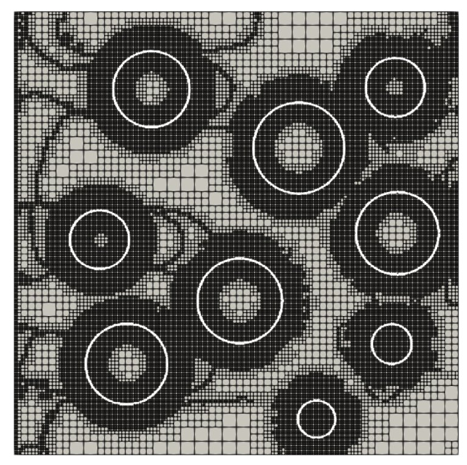
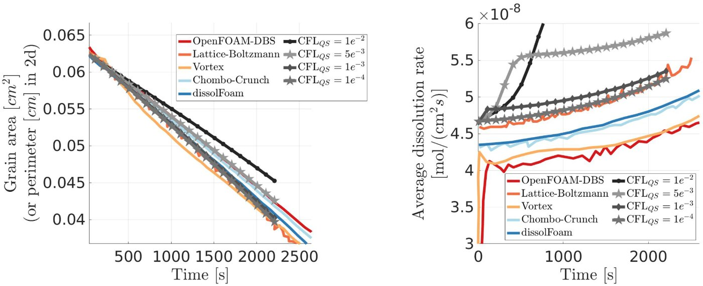
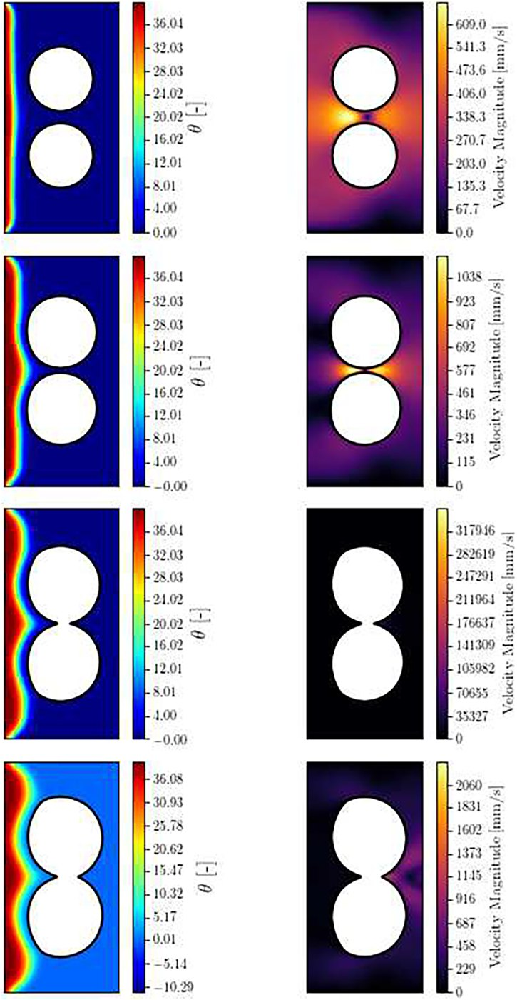
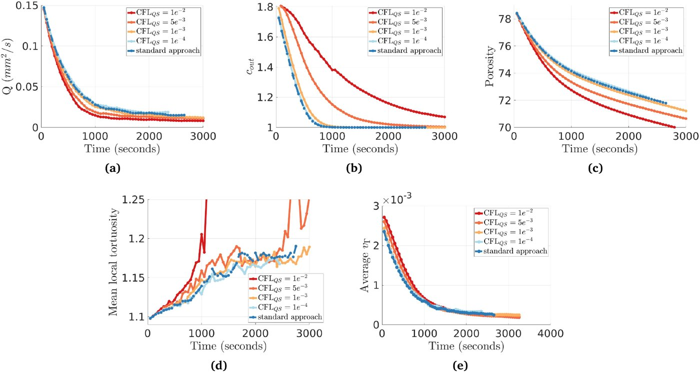

تدريب نهاية الماستر · جامعة كاليفورنيا، سانتا باربرا · 2024 (6 أشهر)
التدفقات في الأوساط المسامية التفاعلية
نموذج عدديتحقق على مسألة مرجعيةمنشور

الملخص
عندما تترسب المعادن أو تذوب داخل صخرة مسامية أو مرشّح، تتغير أشكال المسامات نفسها — ومعها النفاذية وطريقة تدفق السائل. لهذا أهمية في تخزين الكربون، والطاقة الحرارية الجوفية، وترشيح المياه، والحفز الكيميائي. خلال تدريب الماستر في فريق البروفيسور فريديريك جيبو بجامعة كاليفورنيا سانتا باربرا، عملت على طريقة عددية تتتبع هذا التطور بواجهة صلبة–سائلة حادة، على شبكات رباعية متكيفة لا تتكثف إلا حيث يلزم.
أثمر هذا العمل مقالًا كمؤلف أول: A Sharp Numerical Approach for Modeling Flows in Reactive Porous Media، منشور في Journal of Computational Physics سنة 2026.
الجانب التجريبي
تم أولًا التحقق من الطريقة على مسألة مرجعية معروفة (ذوبان حبيبة كالسيت، مقارنةً بعدة برامج منشورة)، ثم اختبار تقارب الشبكة على اندماج حبيبتين ناميتين. وضعت بروتوكولات الاختبار هذه، وقارنت النموذج بالبيانات المرجعية، وأتمتّ كل المعالجة اللاحقة بلغتَي Python و C/C++ — وهو نفس المبدأ الذي أطبّقه اليوم على منصات الاختبار: لا يُوثق بأي نتيجة قبل مقارنتها بمرجع.
المنهجية والمعادلات
التدفق داخل المسامات: معادلات نافييه–ستوكس لمائع غير قابل للانضغاط،
$$\rho_l\left(\frac{\partial \mathbf{v}}{\partial t}+\mathbf{v}\cdot\nabla\mathbf{v}\right)=-\nabla p+\mu_l\,\Delta\mathbf{v},\qquad \nabla\cdot\mathbf{v}=0 \quad\text{in }\Omega_l$$انتقال المادة المذابة (حمل–انتشار):
$$\frac{\partial C}{\partial t}+\mathbf{v}\cdot\nabla C=D_l\,\Delta C$$عند الواجهة الصلبة–السائلة المتحركة \(\Gamma(t)\)، يعطي توازن الكتلة شرط ستيفان لسرعة الواجهة، التي تُتتبع بدالة مجموعة المستوى \(\phi\):
$$\mathbf{v}_\Gamma\cdot\mathbf{n}\approx-D_l\,\nabla C\cdot\mathbf{n},\qquad \frac{\partial\phi}{\partial t}+\mathbf{v}_\Gamma\cdot\nabla\phi=0$$تُستكشف الأنظمة عبر أعداد بيكليه ودامكولر ورينولدز: \(\mathrm{Pe}=UL/D_l\)، \(\mathrm{Da}=kL/D_l\)، \(\mathrm{Re}=\rho_l UL/\mu_l\).
الأشكال






